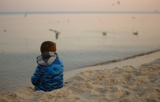

¿Pueden los niños ser considerados criminales?
Tras los sobrecogedores casos de violencia cometidos por niños y contra niños en Cazorla, Bilbao o Barcelona, nos preguntamos si podemos hablar de "niños criminales" y si la respuesta penal es adecuada.